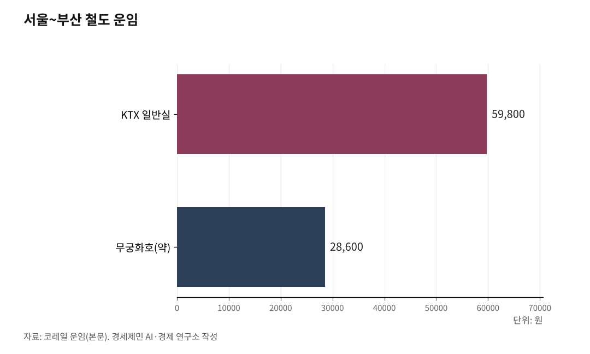

[127년 한국철도⑤] KTX 속도 따라 요금 현실화… 무궁화 늘려 선택권 보장
KTX도 무궁화호도 14년 동결, 명목 동결은 사실 실질 인하다
한꺼번에 올리지 않는다… 빠르면 제값, 느리면 싼값, 속도로 값을 가른다
고속은 고속대로 키워 수익을, 무궁화는 무궁화대로 늘려 선택권을
사라지는 무궁화호, 대체 열차는 더 비싸다… 서민의 발을 지켜야 형평이 산다
인하대 해양AI융합센터 김갑봉 연구교수(물류학)│같은 서울에서 부산까지, KTX는 5만9800원에 두 시간 반 남짓, 무궁화호는 약 2만8600원에 다섯 시간 반이 걸린다. 값도 시간도 두 배 넘게 갈린다. 그런데 두 값 모두 14년째 묶여 있다. 그리고 그 무궁화호가 지금 사라지고 있다.

4편이 속도를 등급으로 나눴다면, 5편은 그 등급 위에 매길 값을 다룬다. 핵심은 하나다. 요금을 현실에 맞게 짜는 것, 곧 현실화다. 다만 한꺼번에 올리는 현실화가 아니다. 빠른 열차는 제값을 받고 느린 열차는 싼값을 지키는, 속도에 값을 맞추는 현실화다.
1. 14년 묶인 값, 동결은 사실 인하다
KTX 운임은 2011년 11월 3.3% 인상을 끝으로 14년 넘게 동결됐다. 서울~부산 일반실 5만9800원은 그 뒤로 한 자리도 바뀌지 않았다. 무궁화호와 새마을호 같은 일반열차도 오래 묶였다. 서민 부담을 이유로 운임을 올리지 못한 채 십수 년이 지났다.
같은 기간 둘레의 값은 다 올랐다. 최저임금은 2011년 시간당 4320원에서 2025년 1만30원으로 132% 올랐고, 코레일이 무는 전기요금도 크게 뛰었다. 명목은 동결이지만 경제학으로 보면 실질 인하다. 둘레가 오르는 동안 값만 그대로면, 실질 운임은 그만큼 떨어진 셈이다.
값을 묶은 대가는 재정으로 돌아왔다. 코레일 누적 부채는 2024년 말 21조원을 넘었고 2025년에는 22조원대로 불어난다. 2030년대 초면 수명이 다하는 KTX-1 교체에만 약 5조원이 든다. 값을 못 올린 채 빚으로 메우면 안전 투자가 뒤로 밀린다. 그래서 코레일은 2025년 운임 17% 인상안을 내놨다. 현실화는 미룰 수 없다.

2. 문제는 올리느냐가 아니라 어떻게 나누느냐다
그러나 한 번에 크게 올리기는 어렵다. 국민 동의와 정치권·경제부처 합의라는 문턱이 높다. 그래서 차등이 먼저다. 속도와 등급, 시간대로 값을 나누면 평균 인상 없이도 재정과 형평을 함께 손본다.
고속은 고속대로 공급해야 한다. 고속철도 수요는 두껍고, 그 수요가 코레일의 곳간을 채운다. 빠른 길에 제값을 매겨 수익을 내는 것이 옳다. 진짜 문제는 빠른 길에만 값을 맞추고 느린 길을 방치하는 것이다.
3. 속도는 갈렸는데 값은 아직이다
4편에서 봤듯 한국 철도는 이미 속도가 갈렸다. 고속 KTX-청룡은 시속 320km, 준고속 KTX-이음은 260km, 일반 무궁화호는 150km로 달린다. 사다리는 세 칸이다. 그런데 값의 차이는 속도의 차이만큼 또렷하지 않다. 같은 거리를 다른 속도로 가는데, 그 값이 속도를 제대로 비추지 못한다.
사다리는 인프라로 자라고 있다. 정부는 고속전용선만 더 까는 대신, 기존선을 직선화하고 복선전철화해 준고속으로 끌어올린다. 1942년 단선으로 깔린 중앙선이 그렇게 고속화돼, 안동~영천 구간이 시속 150km에서 250km로 빨라졌다. 준고속선을 새로 깔기도 한다. 중부내륙선과 강릉선이 KTX-이음(EMU-260)을 받았다. 기존선이 준고속을 맡으면 고속전용선은 더 빠른 고속에 집중한다. 사다리가 인프라로 깔리는 만큼, 값도 그 사다리에 맞춰야 한다.
해외는 사다리 전체에 값을 맞췄다. 독일은 시속 300km 고속열차 ICE(인터시티익스프레스)에 프리미엄 값을, 재래선 도시간열차 IC(인터시티)에 중간 값을, 지역열차에 낮은 값을 매긴다. 프랑스도 고속 TGV 인위(inOui)부터 저가 위고(Ouigo), 재래선 인터시테(Intercités), 지역열차 테르(TER)까지 층층이 갈랐다. 빠르고 편하면 비싸게, 느리고 단출하면 싸게. 원리는 하나다.
4. 사라지는 무궁화호, 위협받는 선택권
그런데 한국은 거꾸로 가고 있다. 사다리의 맨 아랫칸인 무궁화호가 빠르게 줄고 있다. 코레일은 2017년부터 2021년까지 경부·호남·중앙선 무궁화호를 4년간 36% 감축했다. 평일 44편, 주말 50편이 사라졌다. 그 뒤로도 감축은 이어져, 2024년 말 중앙선 청량리~부전 무궁화호가 폐지돼 준고속 ITX-마음(Intercity Train eXpress)으로 바뀌었다. 코레일은 2028년까지 무궁화호를 순차 퇴역시킬 계획이다.
문제는 값이다. ITX-마음은 무궁화호를 대체한다면서 운임은 한 등급 위인 ITX-새마을을 따라간다. 무궁화호보다 비싼 값이 서민에게 그대로 넘어온다는 비판이 나온다.
모두가 고속을 원하는 것은 아니다. 급하지 않은 사람, 주머니가 가벼운 사람, 무궁화호밖에 닿지 않는 중소도시 사람에게는 싸고 느린 열차가 곧 발이다. 맨 아랫칸을 없애면 선택권이 사라진다. 빠른 열차를 못 타는 것이 아니라 안 타는 사람에게도, 싼 열차를 고를 권리가 있다.
5. 빠르면 제값, 느리면 싼값… 그것이 현실화다
그러므로 현실화의 답은 둘이다. 고속에는 제값을 매겨 수익을 내고, 값싼 일반 등급은 줄이지 말고 늘려 선택권을 넓힌다. 그 사이를 준고속과 시간대 차등으로 메운다. 붐비는 시간대에 값을 더 받는 탄력 요금은 코레일 사장도 검토하겠다고 했다.
핵심은 형평이다. 똑같은 값으로 다른 속도, 다른 시간을 파는 것이야말로 불공평하다. 빠른 열차와 붐비는 시간에 제값을 매기고, 느린 열차와 한산한 시간을 싸게 남기면, 묶인 운임을 한꺼번에 흔들지 않고도 재정의 숨통을 튼다. 그리고 서민의 발을 지킨다.
요금을 다듬어도 남는 것이 있다. 22조원 부채와 자연독점이라는 철도 재정의 구조다. 다음 편에서 그 뿌리를 짚는다.
※ 이 기사는 AI 프로그램 클로드를 활용해 작성했습니다.
참고문헌
· "서울·부산 KTX 요금 7만원 되나···코레일 '운임 17% 인상 추진'", 경향신문, 2025.3.25., https://www.khan.co.kr/article/202503251700001
· "코레일 사장 'KTX 요금 15년간 한 번도 안 올라 재무 압박···빠른 시일 내 올려야'", 경향신문, 2026.5.17., https://www.khan.co.kr/article/202605171527001
· "사업비 5조, '16칸 EMU-320' 도입… 내년 첫 발주 [노후 KTX-1 교체]", 철도경제신문, 2026.4.7., https://www.redaily.co.kr/news/articleView.html?idxno=16135
· "무궁화호, 역사 속으로···2028년까지 'ITX-마음'으로 대체", 뉴스웨이, 2023.8.25., https://www.newsway.co.kr/news/view?ud=2023082516172790586
· "무궁화·새마을호 부족난 풀릴까... ITX-마음 9월부터 운행 시작", 오마이뉴스, 2023.8.29., https://www.ohmynews.com/NWS_Web/Series/series_premium_pg.aspx?CNTN_CD=A0002951354
· "[단독] 4년간 36% 감축, 점점 사라지는 무궁화호···비용 부담은 시민에게", 경향신문, 2021.10.10., https://www.khan.co.kr/article/202110101704001
· "EMU-260의 등장, 준고속철도 확장으로 이어져", 전기신문, https://www.electimes.com/news/articleView.html?idxno=342312
· "82년 만에 복선 고속철도로 개량...청량리-부전 3시간대 [중앙선 완전개통]", 철도경제신문, 2024.12., https://www.redaily.co.kr/news/articleView.html?idxno=11015
· "2025년 적용 최저임금 시간급 10030원", 고용노동부(정책브리핑), 2024.8.5., https://www.korea.kr/briefing/pressReleaseView.do?newsId=156644351
· "Long-distance trains (ICE, IC/EC)", Deutsche Bahn, https://int.bahn.de/en/trains/long-distance-trains
· "TGV INOUI, OUIGO, Intercités, TER", SNCF, https://www.sncf.com
#한국철도127년 #요금현실화 #철도요금차등 #무궁화호 #ITX마음 #서민교통 #선택권보장 #속도별요금 #KTX요금 #탄력요금